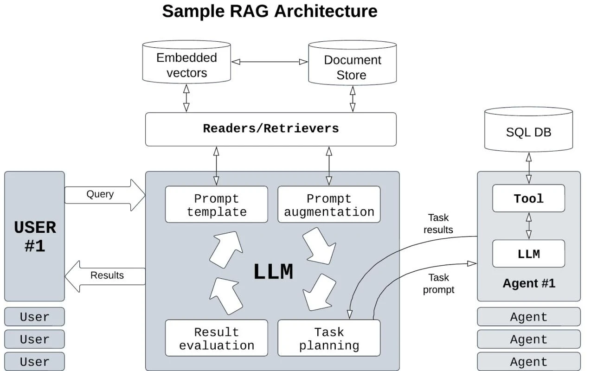
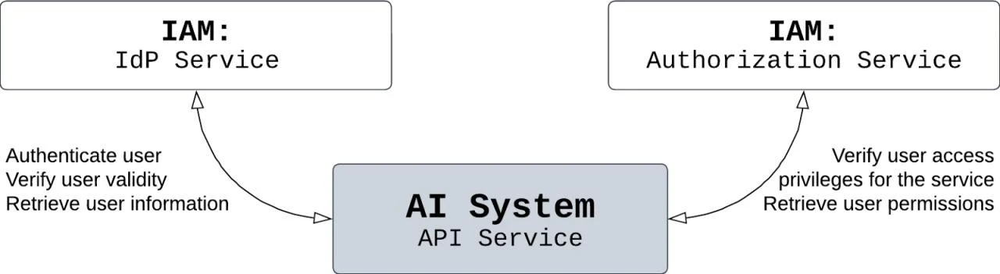
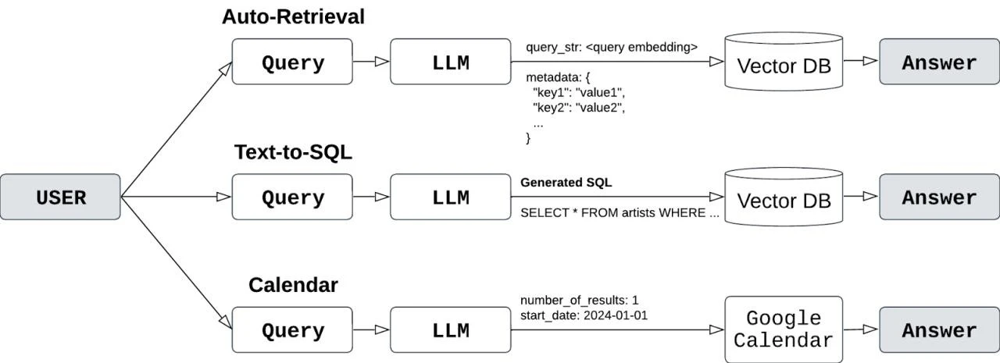
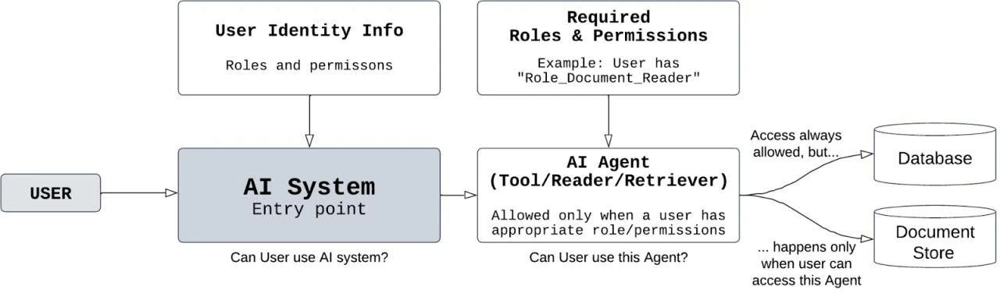
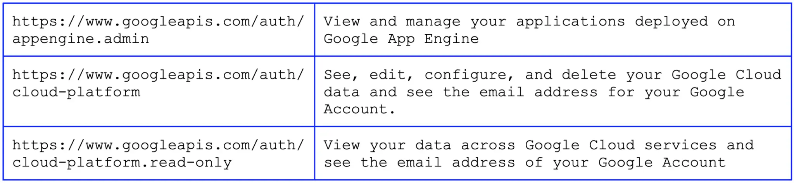
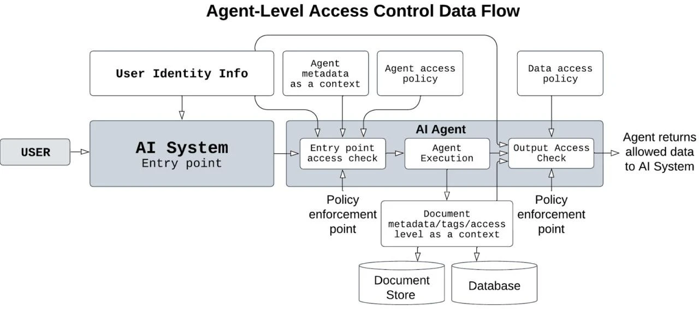
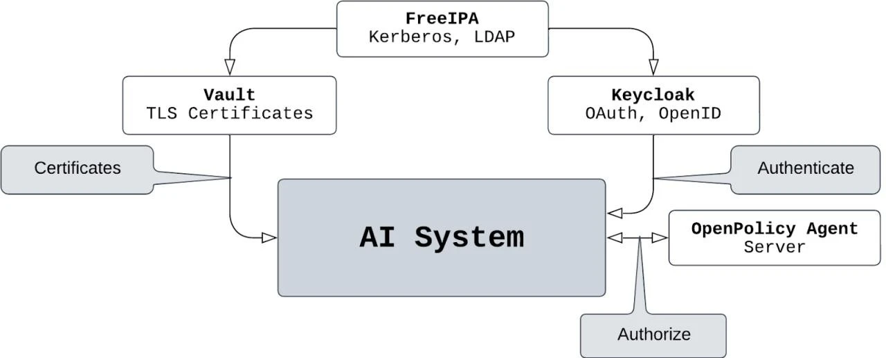

February 13, 2024
The progress of AI is accelerating at an exponential pace. Enterprises that are quick to reinvent themselves with AI technologies will not just survive but will flourish; those that tread cautiously are at risk of sinking into obscurity. This is the driving force behind our “Practical Access Control for GenAI” series. In the first introductory part, “Part I: Prompt and Output RBAC,” we laid down the groundwork for enterprises eager to adopt AI swiftly. Continuing with this momentum, our second installment dives deeper into the access control architecture of the most widely adopted enterprise AI framework—Retrieval Augmented Generation (RAG). For those less versed in technical jargon, I recommend beginning with the introductory piece, “From GenAI Novice to a Pro: A Non-Techie's Guide for Enterprise AI Integration,” before moving forward.
Enterprises are embracing a new generation of AI. Generative AI technology has enabled previously impossible use scenarios, ranging from intelligent, non-keyword searches in documents and summarization to editing assistance and beyond. However, the evolution of AI technology does not stop at these initial applications. We are rapidly advancing towards AI assistants capable of performing intricate tasks that require sophisticated behavior with ease. Imagine an AI assistant capable of exploring online resources, synthesizing a report complete with summaries of relevant sources, integrating this with data and information from internal enterprise systems, and presenting it all—both qualitatively and quantitatively, including infographics—in just minutes rather than the weeks it might take a human. The potential productivity gains could allow employees to focus on what truly matters: enhancing the quality of service and products for their customers and ensuring that customer service is more professional and swift than ever before.
With these imminent capabilities just around the corner, the question arises: How can we enable such capabilities in a manner that ensures AI assistants have the proper access rights, adhere to data governance rules, and allow enterprises to leverage the exponential benefits of productivity growth with minimal or controlled risks? This article will tackle this challenge, exploring how Retrieval-Augmented Generation can be turned into Retrieval and access Augmented Generation (RaAG), coincidentally paying tribute to the classical Indian framework for musical composition and improvisation.
To recap, Retrieval-Augmented Generation is essentially a method that allows Language Learning Models (LLMs) to access external data not included in the model during training. This separation of data from the model addresses several issues simultaneously: it enables more granular data control and governance, allows for the use of standard LLMs without the need for costly retraining on corporate data, and provides the model access to real-time data. However, implementing nuanced access and data control is crucial for companies to continue deriving value from their AI investments while satisfying the needs of other stakeholders.
Generative AI can be used not only for reasoning and general text generation but also for processing and utilizing data stores and digital documents to produce more detailed or fact-based outputs. According to researchers who conducted a survey on Retrieval-Augmented Generation for Language Learning Models (LLMs) (the paper can be accessed here), LLMs are inherently prone to hallucinations, maintain too compressed version of the training data to be precise, and offer poor observability regarding how they arrive at their answers.
By combining the language capabilities of LLMs with the precision of external knowledge sources, we can transform LLMs into powerful tools for data extraction and analysis. This is precisely what RAG (Retrieval-Augmented Generation) accomplishes: it enables access to document repositories, internal and external APIs, data stores, and web search engines to retrieve factual information, thus producing fact-based LLM outputs with appropriate references.
Existing implementations of document retrieval range from naive to more advanced versions. A naive document retrieval approach involves splitting the document into chunks and indexing each chunk individually. The search process then entails encoding the user inquiry into a vector of numbers and searching for similar vectors among all the document chunks. While this simplified approach is useful, it suffers from several issues such as lower recall (not all relevant documents are found) and lower precision (some documents found are not relevant to the query). This is partly due to the document being split into chunks without regard to its internal structure, indexing at the same granularity level, and the absence of a quality assurance mechanism for the search results.
More advanced versions of document retrieval address these issues by introducing reranking (carefully reviewing the returned results to double-check their relevance), and employing better chunking methods that consider the internal structure of the documents. They also create summaries at various granularity levels to better respond to queries. Furthermore, these versions incorporate multi-step retrievals, caching, persistent memory, reinforcement learning for continuous improvement, and user personalization. In addition to intelligent search, recent experiments have shown that the quality of the overall retrieval system improves when traditional keyword-based search is combined with semantic search. This ensures that search queries looking for a specific term are processed more effectively at the reranking stage.
There are several implementations of the RAG LLM architecture, both open-source and proprietary. The most well-known open-source implementations include LlamaIndex and LangChain. In RAG, pipelines can be constructed to process the initial user prompt into the final result. These pipelines can become sophisticated, consisting of multiple Agents—automated and specialized decision-makers powered by LLMs. Agents can take an arbitrary number of steps to complete a given task, dynamically deciding on the best course of action rather than strictly following a predetermined list of steps. They can be based on dynamically changing or static chains of evolving prompts. Agents interact with the world through a set of Tools, which can range from a simple calculator to elaborate data retrievals and ETL manipulations. The Readers and Retrievers are highly specialized connectors to external data, such as external document stores, which can be used within processing sequences. This external information, retrieved from external storage, “augments” AI to create retrieval augmentation, injecting the ground truth into the creativity and reasoning of GenAI. One of many possible RAG architectures may look as follows:

The architecture can include a diverse combination of Agents, Tools, and Readers/Retrievers: an Agent can also serve as an interface for other LLM models or entire LLM-based frameworks. For instance, LlamaIndex can be accessed within LangChain as an Agent. This complexity and the opacity of data flows and external data connectivity present challenges for security and data governance. Although many resources on the web describe evolving best practices for RAG architectures from a technological standpoint, we have not found an in-depth discussion on the security aspects, particularly regarding access and data governance. In this article, we aim to address this gap, with a particular emphasis on access controls.
In my conversations with companies developing RAG solutions, I am always surprised by how little attention is paid to security. Sometimes, it feels like pushing for a new frontier in a Wild West style. The most frequent response to my inquiries about security is, “We will give all agents the same privileges as the user asking the question,” making all enterprise systems believe it is a user who searches in enterprise data repositories and document stores. However, this approach is deeply flawed for various reasons, from the inability to correctly log interactions between the user and data stores to the impossibility of creating intelligent access control anomaly detection systems. This is because an agent's behavior is profoundly different from a human's behavior, and their access patterns differ. A different approach is necessary.
Regulators around the world have also noticed the problem. Both EU AI Act and US AI executive order place a strong emphasis on traceability and monitoring of AI systems. This should include access logs to trace who interacted with the AI system, how these interactions occurred, and whether they complied with the governance and security policies of the company. All existing enterprise systems employ sophisticated access control systems, and AI systems should be no exception.
To design better access controls for our Retrieval and access Augmented Generation (RaAG) pipelines, we will assume that the AI system is accessed through an API. Although many users will use a chat-based user interface, this UI will, in turn, utilize an AI-powered API backend. Thus, we can concentrate on the API when designing our access controls.
An AI-enabled system accessible via API should be integrated with an Identity and Access Management (IAM) system, specifically with an identity provider (IdP), which authenticates users wanting to use this API, and an authorization service once the user is authenticated. It is important to note that the IAM system does not directly enforce any policy. Instead, it acts as a centralized identity information store, an authentication provider, and a policy repository, as follows:

This diagram does not show policy enforcement, an element of the infrastructure that actually prevents unauthorized access. This is because policy enforcement should either be part of the AI system itself or be integrated with it. In either case—whether through direct policy enforcement within the system or integration with an external policy enforcement mechanism—this enforcement should be incorporated into the Readers, Retrievers, Tools, and Agent code.
In our AI system configuration, users interact with the API, the entry point to the entire system, through queries. To highlight the challenge we face in designing an access control system for our AI, we need to recall how permissions have traditionally been designed for pre-AI, classical APIs.
A classic API typically offers multiple methods for different actions, providing a convenient way to install access permission guardrails at each entry point. For instance, in the standard CRUD API interface, each CRUD operation—Create, Read, Update, and Delete—has separate calls with their own HTTP Methods and URIs. A URI can define the object for which a method is called. For example, in the URI /v1/myImportantDocuments/files, access can be managed with two permissions: Read and Write. Create, Update, and Delete API calls will require the user to have Write permission, while a Read call will require Read permission. One can implement more granular permission schemes, such as allowing updates to an object but not its creation, or requiring special Delete permission to remove an object.
Now, introduce an AI system. Defining a permission schema suddenly becomes much harder, a challenge we discussed in our Part I: Prompt and Output RBAC article. This is because, if the same CRUD actions are implemented in our AI system, the entry point for a user remains the same—the natural language query—making it no longer possible to easily differentiate the user's intent by applying controls to different API calls, as was the case with classic data access.
For retrieval-augmented generation-based systems, access control becomes even more challenging. Readers and Agents access various internal data sources, sometimes generating SQL queries or even writing and executing code to obtain a result. These are just a few use cases, highlighting the sprawling complexity of data access beneath the surface of a seemingly simple RAG system's text-based entry point (adapted from Jerry Liu's presentation):

We need an access system architecture that accounts for the complex nature of RAG internals.
Before we delve into the details of permissions and authorization for our RaAG-based AI system, let's first tackle the topic of authentication. There are at least two approaches to identity handling in service architecture. The first is the pass-through approach, where services, upon authenticating the user and confirming the user's validity who is about to use the service, utilize the user's information to perform operations or access other services. The second approach involves a two-step process: upon authenticating the user to validate their authenticity, the service uses its own identity to connect to other services. In real-world scenarios, especially within zero-trust architectures, both user account information and service account information can be combined to validate both the user and the service, especially if multiple services are communicating with each other. This is not unlike sending a human agent to pick up an important package from your friend: your friend should verify the credentials of the agent, but also confirm that the agent is acting on your behalf.
It is a sound security practice to ensure all services/clients are authenticated. One common method is to use TLS mutual authentication, where both the server and the client exchange certificates, which each side can verify against a known CA (Certificate Authority) certificate. There are more advanced methods for client/server authentication, such as the open-source standard SPIFFE (Secure Production Identity Framework for Everyone) and its open-source implementation called SPIRE.
Having Agents and Tools authenticated helps to secure the overall system, but it does not address the issue of original user authentication and authorization. Since user authentication occurs only once at the API call, which serves as the entry point to the AI system, it is crucial for the AI system to propagate identity information to all its subsystems (Agents, Tools, and Readers/Retrievers). While the AI system can extend this identity information to other services it interacts with, it's not uncommon for some systems to utilize different authentication mechanisms or rely on service authentication data instead. This raises the question: When, and by whom, is this authorization validation performed? It might be assumed that databases or document stores have authorization verification capabilities, but these services may not be able to identify the original user who initiated the query.
Now that we have established the need to relay the original user's identity, we must decide on the granularity level of enforcement. Let's start with a simpler approach: certain users will only be allowed to use specific Agents, Readers, Retrievers, and Tools. In the case of an Agent in this simplified architecture, an entire Agent, with its full functionality, would either be accessible to a user or not, depending on the user's role. While some enterprises might be satisfied with this approach, others will not. For those seeking more nuanced control, we will then explore a more detailed, ABAC (Attribute-Based Access Control)-based architecture.
The rationale for agent-level access control is as follows: we understand which data is utilized by each Agent (at least, we are aware of the documents indexed or the data stored in databases) and the required access level. Consequently, we can assign the same access level to the agent itself and perform the access check and enforcement at the agent level when it is invoked prior to fulfilling a task. This process can be managed with a standard RBAC (Role-Based Access Control), where users are assigned specific roles and permissions to utilize a particular agent. If the user's identity is known to the AI system, it can be passed to its Agents, who can then verify the user's permissions in relation to the Agents' roles and proceed or reject the request appropriately. The access control architecture takes this shape:

The actual implementation of this approach varies based on customer requirements and the technology stack employed. A straightforward implementation might leverage the OAuth2 protocol and open-source identity provider servers that support OAuth2 or OpenID. OAuth2 and OpenID facilitate the use of scopes as a means to define user access rights simply, without requiring additional storage for Roles. For instance, the Google API controls which APIs an application can access based on user identity using scopes. OAuth does not prescribe specific values for scopes, as this is highly dependent on the service's internal architecture and requirements.
Google API Scopes, according to Google, might look as follows:

More sophisticated implementations may employ other authentication protocols like SAML or Kerberos and separate Role and Permission storages like LDAP or Microsoft AD.
On the Agent side, the authorization check can be as straightforward as code that examines a simple file listing roles and their permissions. This enables the Agent to verify user roles against the file's contents. Alternatively, Agents may consult external decision services to determine user access. Having centralized storage for permissions and roles facilitates security management control, whereas local file-based access control does not require any additional services and could serve as an effective initial step on the roadmap to securing AI systems.
The RBAC (Role-Based Access Control) approach discussed in the previous section effectively enables user authentication and authorization, meeting typical enterprise requirements, facilitating relatively rapid development, and importantly, being relatively simple to set up. However, when applied to RAG, several drawbacks of the RBAC approach should be considered before implementing access controls:
These issues can be addressed with Attribute-Based Access Control (ABAC). Access decisions in ABAC are made based on the attributes of the user, the objects, and the context, allowing for the creation of more granular access controls based on various attributes available at the time of the access decision-making process. As the decision relies on dynamic information (attributes) rather than solely on static roles, it employs more sophisticated mechanisms for access decisions. Often, ABAC uses policy engines to determine whether to grant access to a resource. These policy engines utilize special languages to define different policies that analyze available information and make decisions based on this information. Several proprietary implementations of policy engines exist, alongside open-source solutions. OpenPolicy Agent is an open-source policy engine that supports local policy evaluation (running as part of the code) and a server-based configuration, allowing remote clients to supply contextual information and receive an access decision from the server.
With ABAC and policies, it is possible to create a highly flexible and fine-grained access control system for the information processed and generated by AI Agents. These policies can be employed both to check if a user can use an AI Agent before the Agent accepts the task for execution and to verify if the retrieved document (both before its retrieval and to double-check its content's safety per the policy after its retrieval) or the processed data can be relayed to a user.
This approach is undoubtedly more complex in terms of setup and implementation but offers valuable benefits for corporate policies, security, and compliance through fine-grained access control at the data level. It allows for defining policies that can control what data the enterprise AI can process for a particular user, with acceptable implementation complexity and minimal additional data storage or processing costs. The architecture of the fine-grained ABAC access controls for RAG-enabled AI can be as follows:

For this solution to be effective, several requirements need to be implemented:
Let's imagine we were called to assist in implementing generative AI based on the RAG architecture within the financial management division of an investment bank, which advises customers on financial strategy. In its quest for operational excellence, the division decided to employ generative AI to significantly enhance the volume of financial analysis performed by its personnel and to reduce the latency of these analyses conducted by financial analysts.
Financial advisors will utilize the RAG-based generative AI system to obtain relevant financial and analytical data. This will aid them in analyzing their customers' finances and investments and making recommendations. The AI system will employ several tools to gather recent updates on the overall financial markets, collect stock market analyses, and acquire publicly available financial predictions from analysts. Additionally, the AI will have access to tools for retrieving private customer portfolio information and targeted financial goals.
Given that the bank employs thousands of employees in this division, we aim to ensure that only financial advisors have access to customer data. As the company operates in various countries, each with its distinct privacy laws, we also intend to ensure that only advisors within the same country can access documents related to that country, thereby preventing unauthorized cross-border data flows.
Let's explore how we can configure access and output policies using the OpenPolicy Agent (OPA) for this hypothetical scenario. The authors implemented a simplified architecture based on OPA, so all policy snippets below were tested in our sandbox environment, simulating a large financial institution. We will assume the server mode is utilized, wherein Agents send policy query requests with context information contained within the HTTP request body formatted as JSON messages.
The OPA policy language offers flexibility in retrieving identity information, supporting various sources from access tokens, X.509 public key infrastructure certificates, to HTTP headers, and the body of any arbitrary structure, and more. For the sake of simplicity, we'll assume that the information is transmitted in the request body. The request content comprises arbitrary JSON data containing various details about the user, the object to be accessed, and the overall context. The JSON schema should be consistent, as the policy needs to discern where to extract the data for making a decision.
The first policy enforcement action requires an Agent to verify whether a user is authorized to access information that the Agent is designed to provide. Below is an example of a request body sent to the OPA server by the Agent to determine if a user is permitted to use this Agent:
[ Agent ] —–(Pre-auth request)—-> [ OPA Server ]
{ "user": { "id": "john.doe", "first_name": "John", "last_name": "Doe", "location": { "zone": "EU", "country": "Belgium" }, "roles": [ "Financial_Advisor", "Financial_Analyst" ] }, "agent": { "id": "Finance Data Agent", "max_datfa_level": 4, "data_type": "financial", "restrictions": [ "GDPR" ] }, "system": { "id": "AI Enabled Financial Analysis Assistant", "location": { "zone": "EU", "country": "Belgium" } } }
Let's assume the corresponding access policy is as follows:
package system.authz import rego.v1 allowed_roles := ["Financial_Advisor"] default allow := false hasRole contains role if { #Check if user has a role which is in the allowed list some role in input.user.roles role in allowed_roles } same_location if { #Check if user in the same location as AI service input.user.location.zone == input.system.location.zone } allow := {"allowed": true} if { #Allow if in the same location and role found in allowed_roles hasRole same_location } else := {"allowed": false, "reason": "Insufficient role or location mismatch."}
After evaluating the Agent's request with the above policy, the OPA service generates a response. Although we crafted the request and policy manually, the response below is an actual JSON output generated by our deployed OPA service:
[ Agent ] <—–(Pre-auth response)—– [ OPA Server ]
[ [ { "allow": { "allowed": true }, "allowed_roles": [ "Financial_Advisor" ], "hasRole": [ "Financial_Advisor" ], "same_location": true } ] ]
The Agent can then use the decision from the OPA server to either allow the AI query to proceed or deny it. In our scenario, the OPA server authorized access to the financial information. This simple example illustrates how policy rules can specify granular access based not only on user roles but also on the attributes of the service, the data, and the relevant user attributes. Such policies can be crafted to cover more complex cases by checking additional information, such as the time, the user's precise geolocation-related information, or even the result of the machine-to-machine (m2m) consultation with the Intrusion Detection/Threat Analysis System to assess the risk level or any potential threats associated with this request.
Output access controls present an even more compelling use case, as they allow control over which documents the Agent returns after processing the request, based on user attributes. Once the Agent verifies that the user is permitted to use the information and understands the nature of the requested data, it will carry out its retrieval function and any necessary ETL, structured, or generative transformations. Then, a second policy enforcement action is undertaken to check if the document's content (metadata) is permissible for the user. This step is crucial because the content may differ from what the Agent expected. Such discrepancies could arise if the data store is misconfigured or has implementation issues, resulting in the return of financial data not intended for the original requester.
Here is an example of an agent request to the OPA server to check if a document is permissible to be relayed to the user:
[ Agent ] —–(Release request + Metadata)—-> [ OPA Server ]
{ "user": { "id": "john.doe", "first_name": "John", "last_name": "Doe", "location": { "zone": "EU", "country": "Belgium" }, "roles": [ "Financial_Advisor", "Financial_Analyst" ], "isEmployee": true, "access_level": "confidential" }, "agent": { "id": "Finance Data Agent", "max_data_level": 4, "data_type": "financial", "restrictions": [ "GDPR" ] }, "system": { "id": "AI Enabled Financial Analysis Assistant", "location": { "zone": "EU", "country": "Belgium" } }, "document": { "classification": "GDPR protected", "resource_level": "confidential", "tags" : ["financial data", "personal data"] } }
In this example, we assume the Agent was able to collect metadata for the document it retrieved and included it as part of the contextual information for the OpenPolicy Agent to make a decision. This metadata could be stored alongside the document itself or generated on-the-fly by an additional AI model that tags the document based on text analysis. A particularly valuable application of this dynamic tagging is to prevent the inadvertent retrieval of information belonging to a different customer or a document from the same customer but with a higher privacy setting, outside a particular analyst's access privileges. This could occur if a document was mistakenly tagged when entered into the system, either accidentally or by an adversarial insider, and the AI classifier is sophisticated enough to classify it correctly.
Here is the policy that will allow the output document to be relayed only if the user's access level matches the document's level and the user is from a specific location:
package system.authz import rego.v1 default allow := false eu_employee if { #Check if user is EU employee input.user.location.zone == "EU" input.user.isEmployee } user_document_level_match if { #Check if a document level is the same as a user level input.document.resource_level == input.user.access_level } allow if { #Allow if EU employee with matched document level and a document is GDPR protected eu_employee user_document_level_match input.document.classification == "GDPR protected" } allow if { #Allow if EU employee and unrestricted document eu_employee input.document.resource_level == "unrestricted" }
The OPA server can then respond to the Agent with the policy evaluation results and the following decision (once again, this is the actual response generated by our deployment):
[ Agent ] <—–(Release response)—– [ OPA Server ]
[ [ { "allow": true, "eu_employee": true, "user_document_level_match": true } ] ]
Employing a policy engine enables flexible document access while maintaining a relatively straightforward retrieval process. This strategy ensures that users can access multiple document stores with the assurance that only the documents they are authorized to see will be retrieved.
In light of our exploration into transforming Retrieval-Augmented Generation into Retrieval and Access Augmented Generation (RaAG), we've delved deep into the complex yet crucial world of securing AI architectures. The implementation, deployment, configuration, and testing of AI with a RaAG architecture present intricate challenges, particularly in ensuring that use cases are satisfactorily met without compromising security. As highlighted at the outset, the transition towards retrieval-augmented generation not only seeks to enhance productivity growth within enterprises but also emphasizes the importance of integrating robust access controls and adhering to data governance rules from the ground up.
Security within AI systems, much like in the broader domain of IT, should never be relegated to an afterthought. The early days of operating systems and software security serve as a cautionary tale, reminding us of the perennial risks of insufficient security measures. In the enterprise environment, deploying AI systems without seamless integration with established enterprise security frameworks is unacceptable. At a fundamental level, this security architecture should encompass an Identity Management provider, a Role and Permission provider, and a Policy Engine, all within the Attribute-Based Access Control (ABAC) framework detailed in this article.
Given the ubiquity of Access and Identity Management (AIM) solutions in most enterprises, we decided to base our reference architecture on open-source technologies to demonstrate that enterprise-grade AI security does not necessarily require expensive, closed-source tools. This approach not only secures the most advanced RAG-based GenAI deployments but also aligns with the broader goal of achieving unparalleled access and data security. Here is an example of a security-enabled AI system based on readily available open-source products that one can use right now:

While Role-Based Access Control (RBAC) may set a foundational baseline for security within enterprise AI systems, it falls short in offering the nuanced granularity required for data access by Agents. Despite the additional efforts and investments required to define access policies and generate metadata for effective decision-making, the ABAC approach promises unparalleled flexibility in controlling access at an individual document level. The dynamic and non-deterministic nature of AI-enabled systems imposes the requirement of advanced access control. For enterprises navigating the complexities of sophisticated AI deployments, adopting ABAC is not just recommended; it's imperative for ensuring that the harmonious potential of enterprise AI is fully realized with our RaAG architecture, safeguarding the symphony of data and access within the enterprise.